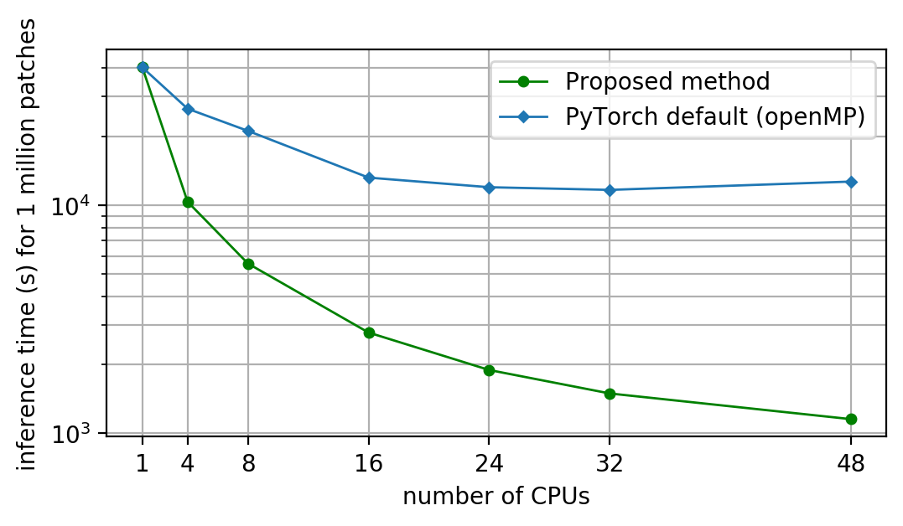

The low efficiency of the CPU version PyTorch for HPC remains an unsolved issue: puting all 48 CPUs into computation would only get you ~ 4 - 8 speed up (depends on CNN architecture), via htop, I found out that all CPUs are indeed in computation, that means the threads are correctly spreaded, but the saturation effect comes too early. Conventionally, there are two system level solutions: (1) launching job in fixing CPU affinity way and (2) setting the NUMA (non-uniform memory access). However, after testing them, I found out none of the methods gained more than 5% increment for the performance. I guess one possible reason could be that affinity / NUMA will facilitate the performance for simple computation, but for massive matrix manipulations, those system level solutions probably will not be able to contribute that much to the speed. I grabed a picture from PyTorch official docs here
, which seems to be a common issue already.

In this article I'd like to share my method for solving this issue. Please note it is aiming at improving the performance for parallelization in a shared memory system instead of the single-core computer, as single-core performance is a rather well solved issue (e.g. MKL-DNN, C++ based solution). If you are experiencing the same issue while working on inferencing very high resolution images (let's say, with 1E8 pixels) with PyTorch CPU version, this should help you.
First of all, let's take a look at the software configurations:
Python 3.6.8 PyTorch (version 1.3.0) built with : - GCC 7.3 - Intel MKL 2019.04 for Intel 64 architecture - Intel MKL-DNN 0.20.5 - OpenMP 4.5 - NNPACK enabled - BLAS = MKLand some specs of the test machine with 96 GB ram:
model name : Intel(R) Xeon(R) Platinum 8174 CPU @ 3.10GHz stepping : 4 cache size : 33792 KB siblings : 48you can see PyTorch is indeed OpenMP and MKL-DNN built instead of the CUDA based, (meaning it is CPU based built). Assume we are about to inference on a high resolution image, as mentioned previously if we purely rely on the OpenMP (which is the default parallellization solution) with few system level tricks, we wouldn't get much performance speedup. So from now on we completely abandon the OpenMP by editing the corresponding environment variables in the python script and set the number of PyTorch threads to 1 as follow (in case we have set the CPU affinity/binding previously, let's also remove it).
os.environ['OMP_NUM_THREADS'] = '1' torch.set_num_threads(1)
OK, now we enter the world allowing us to fully develop our own parallelization code. A very natural mind came up to me is spawning 48 processes (yes, processes insteads of threads), so that each process and its corresponding memory space is independent (yes, sounds like CPU-RAM affinity). In order to do so, after loading the image into numpy array, we can split the array into 48 partitions, and assign each partition to a single CPU to isolate the memory space.

An important point is spawning multiple processes (memory isolated) is not identical to multithreading (memory shared within parent process). Now we need to pin each memory space for a single CPU (otherwise we will not gain higher performance than OpenMP), there are handful ways for implementation, but the python map based methods seems not working for me. I suggest to write the PyTorch inference code (mainly the iteration part) as a function and spawn it into 48 process by using multiprocessing.Process() method as the code below indicates.
import psutil
import torch.nn.functional as F
import multiprocessing as mp
def model_IO_cpu_pin(cood, pubobj, model, affinity):
proc = psutil.Process()
proc.cpu_affinity(affinity)
nbatch = len(cood)
with torch.no_grad():
for i in range(nbatch):
tomod = from_cood_2_sampbatch(cood[i]) # I defined for batch array
tomod = torch.from_numpy(tomod)
tomod = F.interpolate(tomod, size=(224,224))
......
if __name__ == '__main__':
allprocs = []
for cpu in range(48):
affi = dict(affinity=[cpu])
p = mp.Process(target=model_IO_cpu_pin, args= (coodcpu[cpu], \
zeros_lcz_map_sm, model, ), kwargs=affi)
p.start()
allprocs.append(p)
for p in allprocs:
p.join()
The code clause above basically implement the process generation for each physical CPU to be computed independently, just in case you are curious about the pubobj in the code, it is a publically writeable object for each process, I use the numpy.ctypeslib to create the ctype array to pass it as the argument.
So back to our topic, what exactly happened when we run it? I put a htop screenshot here, from which you can see that indeed 48 processes have been allocated for each physical CPU.
Before revealing the final result, I would like to introduce my benchmark method, I generated ~ 4E6 image patches with resolution 224 x 224 pixels, then I use the Resnet18 with customized FC class number to compute these patches in MKL-DNN domain and measure the running time to evaluate the performance for different number of CPUs. I use this method to measure the parallellization performance of the default OpenMP based and my proposed method. The full benchmark are illustrated below.
Isn't the result amazing! For the default OpenMP, the saturation effects sarted with 16 CPUs, eventually there is only ~ 4 x speed up compared with single CPU, meaning you basically waste a tremendous amount of computational resources. However for my proposed menthod, the performance is nearly linearally propotinal to the number of CPUs, the highest performance is ~ 10 x faster than the default solution. Our design and implementation works.
I am actually rather curious about the deeper reason why the PyTorch with OpenMP somehow is significant slower than the theoretical max. I think, firstly, OpenMP specification is rather complicated, secondly not much people use CPU based PyTorch, so this could be the reason that the optimization of CPU based PyTorch didn't gain much attention. Although GPU is already the main computational power for deep learning tasks, for big data oriented applications, the availability of the industrial grade GPU cards (e.g. Nvidia P100/V100) in most of the HPC centers is still lower than the CPU based computing nodes, so I think it worth to explore the potentials from CPU based architecture for deep learning community.
Researcher / content creator: Cong Luo. Copyright reserved.